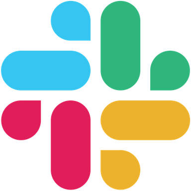

Canal 01
Mensagens entram e saem pela conta conectada ao Gateway.
Credenciais
Sessão da contaSegredo deste canal
••••••••Página 3 · Anatomia das conexões
As seis peças continuam juntas. O Gateway conecta esse mesmo profile a canais diferentes; cada conexão tem sua própria credencial.
Uma identidade no Hermes
defaultO Gateway abre caminhos para conversar. As outras cinco peças não precisam ser duplicadas para cada canal.
Canal 01
Mensagens entram e saem pela conta conectada ao Gateway.
Credenciais
••••••••Canal 02
O bot recebe e entrega mensagens usando o mesmo profile.
Credenciais
••••••••
Canal 03
O aplicativo leva as conversas da equipe ao mesmo profile.
Credenciais
••••••••